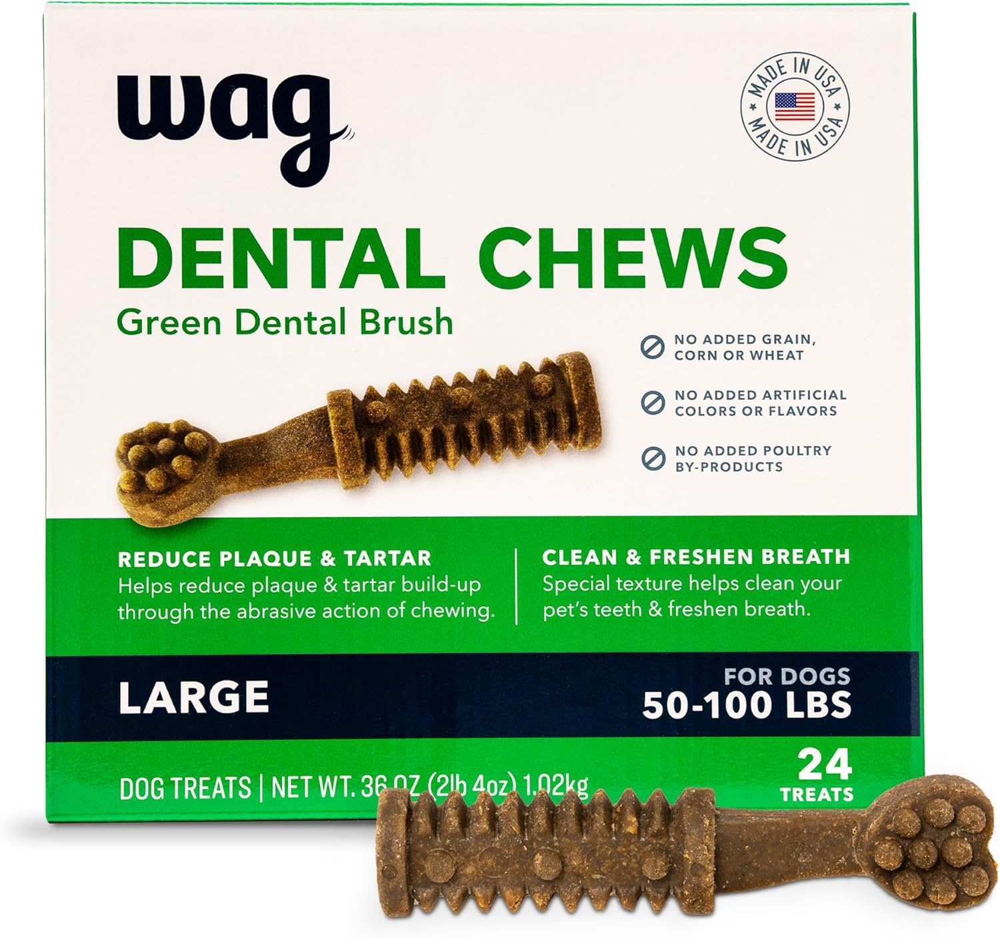
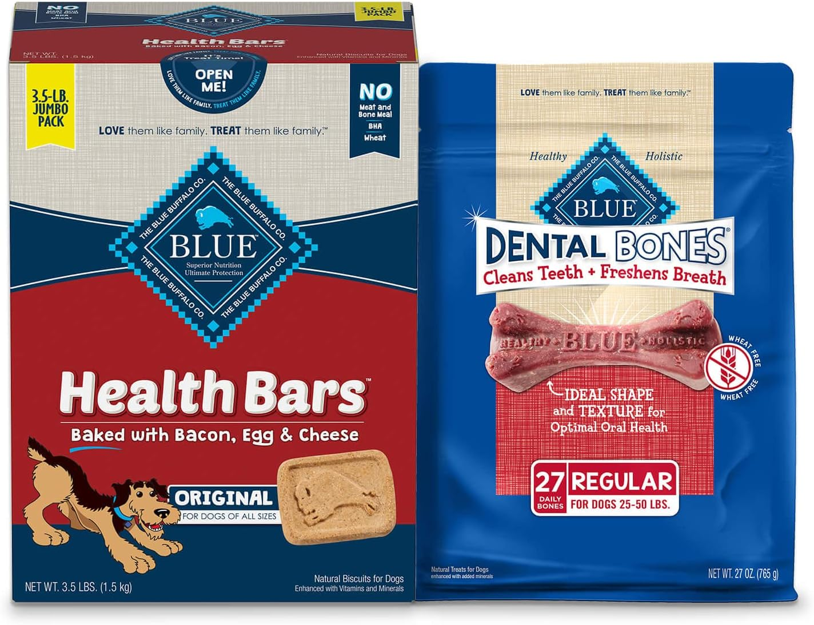
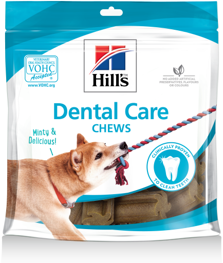
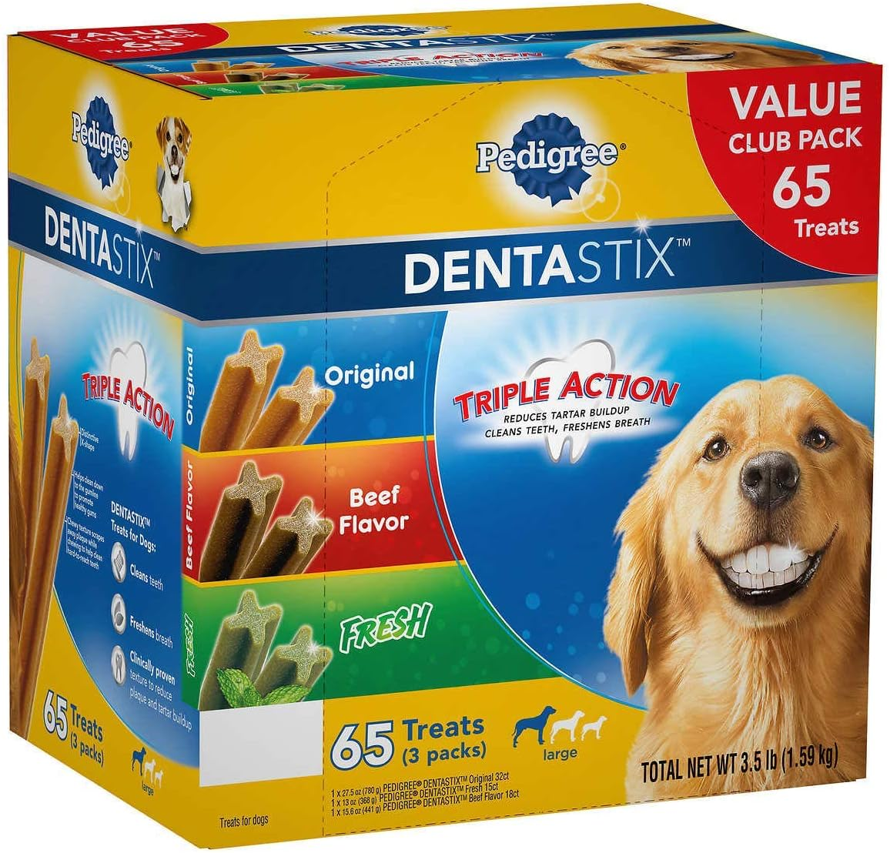
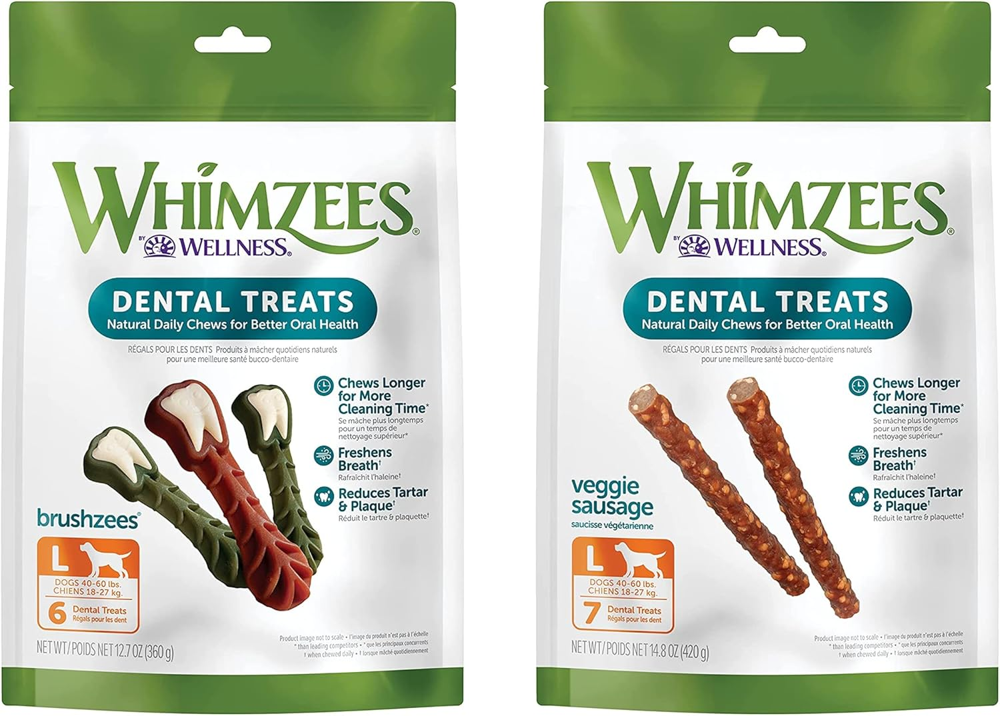

Best Dental Chews for Dogs 2025
Quick Picks to Prevent the $3,000 Veterinary Dental Bill
Most dog owners don't realize their pet's mouth harbors bacteria levels comparable to a garbage disposal until they face a $3,000 veterinary dental procedure. By age three, 80% of dogs show signs of dental disease that could have been prevented with proper dental chews.
The difference between dogs who receive regular dental care and those who don't isn't just about fresh breath—it's about preventing heart, liver, and kidney damage caused by oral bacteria entering the bloodstream.
Complete Guide to Dog Dental Health
The Science Behind Effective Dental Chews
Dental chews work through mechanical abrasion—the chewing action physically scrapes away plaque before it hardens into tartar. However, not all chews are created equal. The Veterinary Oral Health Council (VOHC) has established specific criteria for products that genuinely improve oral health.
Key Mechanisms of Plaque Removal
Texture and Shape: Effective dental chews have specific textures that create friction against teeth. Ridged surfaces work better than smooth ones, while the chew must be firm enough to require significant jaw work but not so hard it risks breaking teeth.
Chewing Time: Research shows dogs need at least 5-7 minutes of active chewing to see dental benefits. Chews consumed too quickly provide minimal oral health improvement.
Chemical Action: Some dental chews contain enzymes that break down bacteria or ingredients that help control tartar formation. However, mechanical action remains the primary benefit.
VOHC Approval Matters
Only products that demonstrate at least 10% reduction in plaque or tartar through clinical trials receive VOHC approval. This independent certification is your best guarantee of effectiveness.
Product Comparison: Clinical Results
| Product | VOHC Approved | Plaque Reduction | Chew Time | Price/Treat | Best For |
|---|---|---|---|---|---|
| Greenies Original | Yes | 60% | 8-12 min | $1.20 | Daily maintenance |
| Blue Buffalo Dental Bones | Yes | 45% | 12-15 min | $1.85 | Heavy chewers |
| Hill's t/d | Yes | 69% | 5-8 min | $2.40 | Therapeutic use |
| Pedigree Dentastix | Yes | 40% | 6-10 min | $0.75 | Budget option |
| Whimzees Hedgehog | Yes | 35% | 10-15 min | $1.50 | Natural ingredients |
Top 5 Dental Chews Based on Clinical Testing
1. Greenies Original Daily Dental Treats - Best Overall
The gold standard in dental chews, Greenies Original has undergone more clinical testing than any competitor. The unique texture and shape are specifically designed to clean teeth down to the gumline while being easily digestible.
Pros
- VOHC approved with 60% plaque reduction
- Most extensively tested dental chew
- Appropriate chew time for effectiveness
- Available in 6 sizes for all breeds
- High palatability across breeds
Cons
- Higher calorie content than alternatives
- Contains wheat (allergen for some dogs)
- Premium pricing compared to generic options
- Some dogs finish too quickly
Best For: Dogs of all sizes who need proven daily dental maintenance with veterinary backing.
Check Current Price on Amazon2. Blue Buffalo Dental Bones - Best for Heavy Chewers
Designed for dogs who destroy regular chews in minutes, these bones provide extended chewing time while using natural ingredients. The unique shape cleans different areas of the mouth as dogs work through the treat.
Pros
- Durable construction for aggressive chewers
- Natural ingredients, no artificial preservatives
- VOHC approved for tartar control
- Longer lasting than most alternatives
- Made in USA with quality control
Cons
- Higher price point per treat
- May be too hard for senior dogs
- Limited size options
- Some dogs lose interest partway through
Best For: Power chewers who need durable dental chews that won't disappear in 30 seconds.
Check Current Price on Amazon3. Hill's Prescription Diet t/d - Best Therapeutic Option
The only dental chew that can be fed as a complete diet, t/d is prescribed by veterinarians for dogs with serious dental issues. The fiber matrix technology provides superior mechanical cleaning action.
Pros
- Highest plaque reduction in clinical trials
- Can replace regular kibble completely
- Veterinarian-developed formula
- Proven safe for daily feeding
- Effective for severe dental disease
Cons
- Requires veterinary prescription
- Most expensive option per serving
- Less palatable than treat-based options
- May require diet transition period
Best For: Dogs with diagnosed dental disease who need therapeutic intervention.
Check Current Price on Amazon4. Pedigree Dentastix - Best Budget Choice
Proving that effective dental care doesn't require premium pricing, Dentastix delivers clinically proven plaque reduction at a fraction of the cost of premium brands. The X-shape design provides multiple cleaning angles.
Pros
- VOHC approved effectiveness
- Lowest cost per treatment
- Widely available in stores
- Good palatability across breeds
- Multiple size options available
Cons
- Contains more artificial ingredients
- Lower plaque reduction than premium options
- Some dogs consume too quickly
- Higher sodium content
Best For: Budget-conscious owners who want proven dental benefits without premium pricing.
Check Current Price on Amazon5. Whimzees Hedgehog - Best Natural Option
Made with just six natural ingredients, these vegetarian chews appeal to health-conscious owners. The unique hedgehog shape provides multiple textures and angles for comprehensive teeth cleaning.
Pros
- Limited ingredient, natural formula
- Vegetarian and gluten-free options
- VOHC approved for plaque control
- Long-lasting chewing time
- Unique shape provides varied cleaning
Cons
- Lower plaque reduction than synthetic options
- Some dogs find taste bland
- More expensive than conventional treats
- Can be messy when chewed
Best For: Dogs with food sensitivities who need natural dental care options.
Check Current Price on AmazonCritical Sizing Guidelines for Safety and Effectiveness
Choosing the wrong size dental chew creates safety risks and reduces effectiveness. Chews that are too small pose choking hazards, while oversized options may be rejected or cause jaw strain.
Size Selection by Weight
- Petite (5-15 lbs): Smallest available size, often designed for toy breeds
- Small (15-25 lbs): Most popular size for terriers and small mixed breeds
- Medium (25-50 lbs): Suitable for most popular breeds including Labs and Goldens
- Large (50-100 lbs): Designed for German Shepherds, Rottweilers, and similar breeds
- Extra Large (100+ lbs): For giant breeds like Great Danes and Mastiffs
Choking Prevention
Always supervise the first few uses of any new dental chew. If your dog typically swallows treats whole, dental chews may not be appropriate without training to encourage slower consumption.
Ingredients to Avoid and Safety Considerations
Not all dental chews are safe. Some ingredients and manufacturing processes create unnecessary risks that outweigh potential benefits.
Red Flag Ingredients
Avoid These Components:
- BHA/BHT: Synthetic preservatives linked to health concerns
- Propylene Glycol: Unnecessary additive that can cause digestive upset
- Artificial Colors: Serve no health purpose and may cause sensitivities
- Excessive Sugar: Counterproductive to dental health goals
- Unnamed By-Products: Unknown protein sources of questionable quality
Manufacturing Quality Indicators
Look for products made in facilities with AAFCO feeding trial compliance, USDA inspection, or similar quality certifications. Avoid dental chews from facilities with recent FDA warnings or recalls.
What Veterinary Dentists Actually Recommend
Board-certified veterinary dentists emphasize that dental chews are supplemental to, not replacements for, professional dental care. However, they can significantly extend time between professional cleanings.
Professional Guidelines
Daily Use Protocol: Most effective when given at the same time daily, preferably when dogs are alert and interested in chewing rather than simply swallowing.
Monitoring Progress: Veterinarians recommend dental examinations every 6-12 months to track the effectiveness of at-home dental care including chews.
Combination Approach: The most successful dental care combines appropriate chews with periodic brushing and professional cleanings as needed.
Frequently Asked Questions About Dog Dental Chews
Daily use provides optimal benefits for most dogs. Clinical studies showing plaque reduction are based on daily consumption. However, adjust frequency based on your dog's total caloric needs to prevent weight gain.
No. Dental chews help maintain oral health between professional cleanings but cannot remove tartar that has already formed below the gumline. Most dogs still need professional dental care every 1-3 years depending on genetics and diet.
This eliminates the dental benefits and may pose choking risks. Try using puzzle feeders to slow consumption, offering chews during calm periods, or switching to larger sizes that require more chewing effort.
Brachycephalic breeds (flat-faced dogs) may have difficulty with some dental chews due to breathing restrictions. Senior dogs with dental disease should use softer options. Always consult your veterinarian for breed-specific recommendations.
Yes. Puppies should use softer chews designed for developing teeth and smaller mouths. Avoid very hard chews that could damage developing permanent teeth. Most dental chews are formulated for dogs 6 months and older.
Related Dog Health Guides


Affiliate Disclosure: ThePetProductLab participates in affiliate programs including Amazon Associates. We may earn commissions on qualifying purchases made through our links at no extra cost to you.